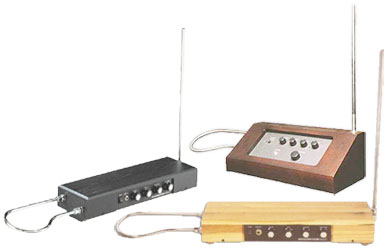

Ситар

Ситар — струнный щипковый музыкальный инструмент типа лютни, используемый для исполнения индийской классической музыки. Основных струн у ситара семь: пять мелодических и две бурдонных. Помимо того на ситаре ещё 9—13 резонирующих струн, которые называются тараф (оркестр). Резонирующие струны, отзываясь на звуки основных, создают то уникальное звучание, которое отличает ситар от других инструментов. Звуки извлекают специальным медиатором, называемым «мизраб», надеваемым на указательный палец.
Терменво́кс

Терменво́кс (theremin или thereminvox) — электронный музыкальный инструмент, созданный в 1920 году советским изобретателем Львом Сергеевичем Терменом в Петрограде. Один из немногих пространственных музыкальных инструментов.
Музыкальная пила

Музыкальная пила — пила, используемая в качестве музыкального инструмента. По штриху относится к глиссандо; звук, издаваемый ею, напоминает звуки терменвокса.